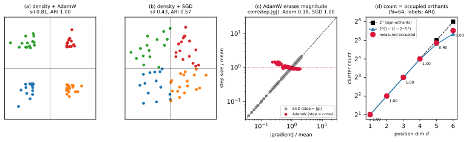

Why the axon–dendrite prior packs into \(2^d\) sign-orthants
A mechanism note, companion to axdn_forensics_report.pdf
§3. That report observed that the axon positions of
nr.axdn-euc-abs on flat_modular snap into
exactly \(2^d\) tight clusters early in
training (four, at the default \(d{=}2\)), sitting on the
sign-orthants of position space, before blurring away — and
that this is set by the optimizer, not the task. Here we derive that
fact and check every step against the run. The whole phenomenon follows
from one structural property: the positions get no gradient from
the loss, \(\partial\,\mathrm{MSE}/\partial(a,D)\equiv
0\) (predictions are \(f_W(x)\);
positions only price \(W\)).
Given the weights, the geometry is a closed dynamical system driven by
the regularizer’s force field and the optimizer — and that pair, not the
data, fixes its shape. Evidence:
notebooks/axon_dendrite/orthant_math_evidence.py.
The density force is radial-outward
Among the three penalty terms only the anti-collapse density prior is load-bearing (report §3–4); on the hidden boundaries it is a Gaussian repulsion on the \(N\) axons, \[\mathcal{R}_{\mathrm{dens}}=\frac{1}{N(N-1)}\sum_{i\ne j} k_{ij},\qquad k_{ij}=\exp\!\big(-\lVert a_i-a_j \rVert^2/2\sigma^2\big),\qquad \sigma=1 .\] Its gradient, and the resulting force on axon \(a_i\) (with \(\partial\,\mathrm{MSE}/\partial a\equiv0\), so only \(c\lambda_d\nabla\mathcal{R}_{\mathrm{dens}}\) acts, wire/consistency being negligible here): \[\frac{\partial \mathcal{R}_{\mathrm{dens}}}{\partial a_i} =-\frac{1}{N(N-1)\sigma^2}\sum_{j\ne i} k_{ij}\,(a_i-a_j), \qquad F_i \;=\; -c\lambda_d\,\frac{\partial \mathcal{R}_{\mathrm{dens}}}{\partial a_i} \;=\;\beta\,\kappa_i\,(a_i-\bar a_i),\] where \(\beta{=}c\lambda_d/N(N-1)\sigma^2>0\), \(\kappa_i{=}\sum_{j}k_{ij}\), and \(\bar a_i{=}\sum_j k_{ij}a_j/\kappa_i\) is the kernel-weighted mean of \(a_i\)’s neighbors. For a centered cloud \(\bar a_i\approx 0\), so \[\boxed{\,F_i \approx \rho_i\, a_i,\quad \rho_i=\beta\kappa_i>0\,}\] — a radially outward push, a positive (axon- and time-dependent) multiple of \(a_i\). The direction is \(a_i\); the magnitude \(\rho_i\) is an arbitrary positive scalar. Measured over the formation phase: \(\cos(F_i,a_i)=0.99\).
The optimizer, not the force, sets the geometry
The force direction is the same for every reasonable optimizer; what differs is how the step treats its per-coordinate magnitude.
Plain GD inflates isotropically.
\(\Delta a_i=\eta F_i=\eta\rho_i a_i \parallel a_i\): each axon moves straight out along its own ray, angles preserved, the cloud dilates without clustering. Step-matched SGD confirms it — the axons spread but never quantize (Fig. 1b; peak silhouette \(0.43\), ARI to the orthants \(0.57\), \(\cos(\text{disp},\text{radial})=0.98\)).
AdamW erases the magnitude.
The per-coordinate update is \(\Delta a_{i,k}=-\eta\,\hat m_{i,k}/(\sqrt{\hat v_{i,k}}+\varepsilon)\). For a coordinate whose gradient holds a steady sign — which it does, since \(g_{i,k}=-F_{i,k}=-\rho_i a_{i,k}\) keeps the sign of \(-a_{i,k}\) — the moment ratio \(\hat m/\sqrt{\hat v}\to\operatorname{sgn}(g)\), so \[\Delta a_{i,k}\;\approx\;-\eta\,\operatorname{sgn}(g_{i,k})\;=\;\eta\,\operatorname{sgn}(a_{i,k}).\] Every coordinate moves at the same speed \(\eta\), in the sign direction of its own coordinate; the magnitude \(\rho_i\) is normalized away. Measured in the formation window: \(|\Delta a|/\eta=1.03\), and the per-coordinate correlation between step size and \(|g|\) is \(0.18\) for AdamW versus \(1.00\) for SGD (Fig. 1c) — \(|g|\) ranges over \({\times}32\) while the AdamW step stays flat.
Constant \(\pm\eta\) steps quantize onto the diagonals.
Let \(s_i=\operatorname{sgn}(a_i)\in\{\pm1\}^d\) be the orthant label. Then \(\Delta a_i\approx\eta\,s_i\) is constant, so \[a_i(t)\approx a_i(0)+\eta\, t\, s_i \qquad\Longrightarrow\qquad \frac{a_i(t)}{\lVert a_i(t) \rVert}\;\longrightarrow\;\frac{s_i}{\sqrt d} \quad(\eta t\gg\lVert a_i(0) \rVert\sim\sigma).\] The init term washes out and every axon drifts onto its orthant’s diagonal ray \(s_i/\sqrt d\) — the corner of the orthant. Axons sharing \(s_i\) converge to the same ray; the \(2^d\) distinct sign vectors collapse the cloud onto \(2^d\) corners (Fig. 1a; peak silhouette \(0.81\), ARI \(1.00\)). The measured displacement aligns with the diagonal far better than with the radial direction it came from: \(\cos(\text{disp},\text{diag})=0.996\) vs. \(\cos(\text{disp},\text{radial})=0.845\) — the exact inverse of SGD.
Count, lock, and dissolution
Signs lock immediately. \(s_i\) is frozen once no coordinate crosses \(0\); the outward force keeps \(|a_{i,k}|\) growing (sign-preserving), so commitment is near-instant — all coordinate signs reach their final value by step \(63\) (fully by \(200\), while test MSE is still \(\sim0.29\)). After that the orthant identity is permanent: ARI to the sign-orthants stays \(\approx1\) even once the visible clusters blur.
The count is a balls-in-bins law. With iid symmetric init each \(s_i\) is uniform on \(\{\pm1\}^d\), so the number of clusters equals the number of occupied orthants (\(N\) balls into \(2^d\) bins): \[\mathbb{E}[\#\text{clusters}]=2^d\big(1-(1-2^{-d})^N\big),\qquad N=64 .\] For \(d\le4\) this is all \(2^d\) (ARI \(1.0\)); it saturates toward \(N\) as \(d\) grows — predicted \(27.8\) at \(d{=}5\) and \(40.6\) at \(d{=}6\), measured \(29\) and \(46\) (Fig. 1d). At the default \(d{=}2\) the count is \(2^2{=}4\): its match to the four task modules is a coincidence, not discovery (the ARI between clusters and module labels is \(\approx0\)).
Dissolution is density’s second act. Once the radius exceeds \(\sigma\) the cross-orthant kernels vanish and the within-corner pairs become the close ones; the same repulsion now fans each corner out within its orthant, so silhouette falls while sign identity stays locked. The packing is thus created by density\(\times\)AdamW and undone by density alone — optimizer geometry end to end.

Takeaway
The cluster geometry is the fixed point of (density force field) \(\times\) (AdamW): axis-aligned because AdamW’s update is axis-aligned, and \(2^d\) in number because the force is radially symmetric in \(\mathbb{R}^d\). The data never enters — \(\partial\,\mathrm{MSE}/\partial a\equiv0\). A representation that sits off the gradient path is organized by optimizer geometry, not by the task; to make it express the task it must enter the forward pass (cf. NeuroPos, where \(w_{ij}=1/\lVert p_i-p_j \rVert\) is the weight). The same equation governs Separator’s codes, where the corners are vertices of \(\{0,1\}^K\) and the packing is persistent (sigmoid saturation freezes the gradient there) — report §5.